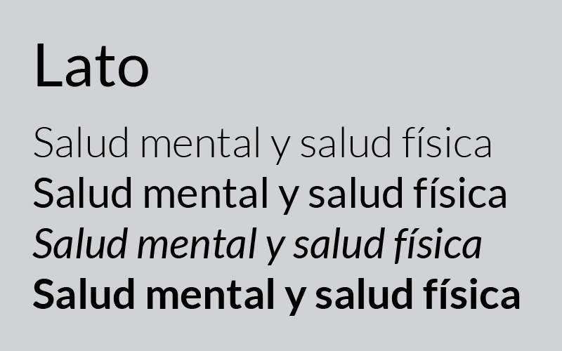
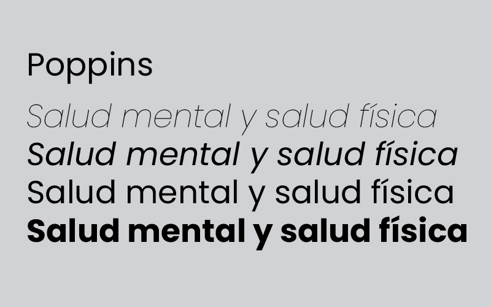
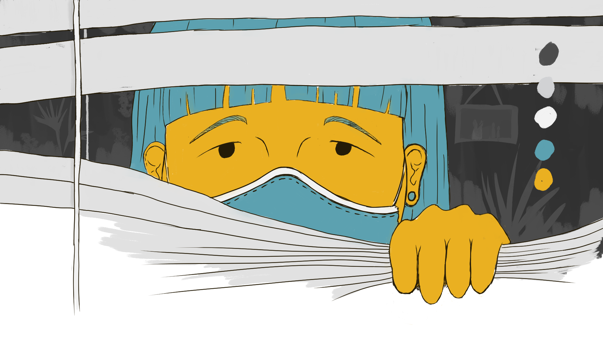
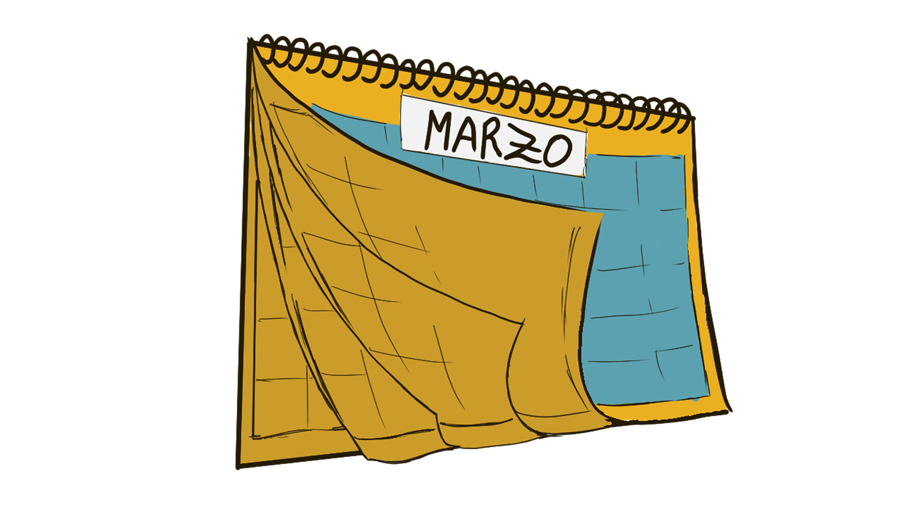
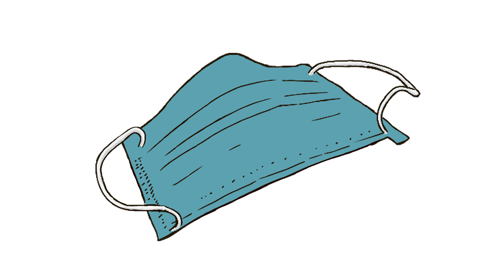

Colores Aplicados
Los colores aplicados a la infografía pertenecen a un contraste claro oscuro con la aplicación de tonos neutros y tonos complementarios.
Tipografías Aplicadas

Lato
Diseñado por Georg Duffner en 2019. Pertenece a las tipografías con serif y fue empleada para el título y para ciertos párrafos de contenido.

Poppins
Diseñado por Mamoun Sakkal y Juliet Shen, en 2017. Pertenece a las tipografías sin serif y fue aplicada para párrafos de contenido.
Recursos Gráficos Aplicados

Ilustración Portada
Esta ilustración dará inicio a la cabecera de la infografía digital

Ilustración de Recorrido
Inicio del recorrido informativo sobre el inicio de la mala salud mental junto a la pandemia.

Ilustración Representativa
Recurso que permitirá representar los elementos de higiene de constante uso y que representan estrés en las personas.